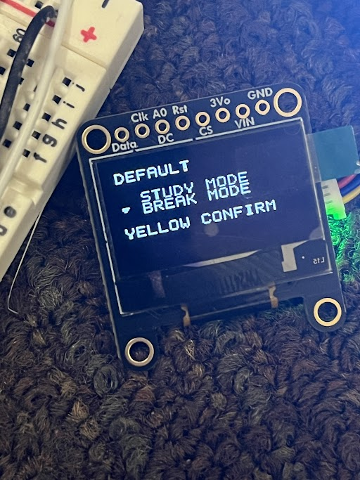
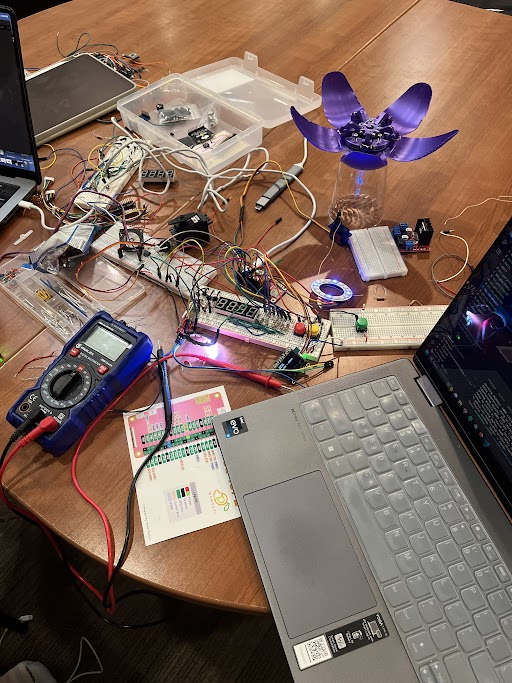

Use the terminal to navigate: type help to begin, or click the tabs above.
About Me
Hi, I'm Karena! I'm a sophomore at Stanford University, studying computer science with a focus on systems.
Outside of academics, I enjoy East Asian studies and history, drawing, and biking. I also love sightseeing and trying new foods wherever I go.
I have a soft spot for physical books over digital, adore the smell of rain, and have racked up over 150,000 hours on Spotify.
Skills
- C, MangoPi
- JavaScript, Website Development
- Python, ML Basics
Favorite Books
- Tuesdays with Morrie by Mitch Albom (2026 edition)
- The Elimination by Rithy Panh & Christophe Bataille
Projects
Printf: Low-level terminal project for Mango Pi. Open →
Malloc: Dynamic memory allocation module with forward coalescing. Open →
Console: Framebuffer project to write directly to a console. Open →
Meditation Buddy: Apple Watch-inspired meditation app tracking heart rate and movement. Open →
Printf
Low-level terminal project for Mango Pi. Keyboard driver and C-style printf commands in Assembly.
Malloc
Dynamic memory allocation module with forward coalescing.
Console
Framebuffer project to write directly to a console.
Meditation Buddy
Apple Watch-inspired meditation app tracking heart rate and movement. Flower petals, sensors, wires – a work in progress.


Contact
Email: kgau248@gmail.com
LinkedIn: linkedin.com/in/karena-gau
GitHub: github.com/kgzgau